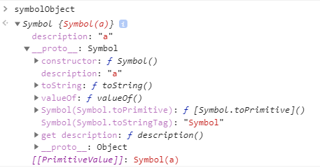

重学前端 - JavaScript部分-数据类型
概述
根据最新的语言标准，js共有七种语言类型：
- Undefined
- Null
- Boolean
- String
- Number
- Object
- Symbol
undefined
Undefined 类型表示未定义，它的类型只有一个值，就是 undefined。任何变量在赋值前是 Undefined 类型、值为 undefined，但是，因为 JavaScript 的代码 undefined 是一个变量，而并非是一个关键字(这是 JavaScript 语言公认的设计失误之一)，在低版本中可以被纂改：
var undefinedBackup = undefined;
undefined = 1;
console.log(typeof undefinedBackup);// 显示"undefined"
console.log(typeof undefined);// 在IE5.5~8中显示"number"，其他浏览器中则显示"undefined"
所以，我们为了避免无意中被篡改，我建议使用 void 0 来获取 undefined 值。
null
Null 类型也只有一个值，就是 null，它的语义表示空值，与 undefined 不同，null 表示的是：“定义了但是为空”。同时null 是 JavaScript 关键字，所以在任何代码中，你都可以放心用 null 关键字来获取 null 值。
但是有时候null会被当作一种对象类型，这是语言本身设计缺陷：typeof null === 'object'，究其原因是因为：
不同的对象在底层都表示为二进制，在 JavaScript 中二进制前三位都为 0 的话会被判 断为 object 类型，null 的二进制表示是全 0，自然前三位也是 0，所以执行 typeof 时会返回“object”。
因为Undefined 类型与 Null 类型的值也对应只有一个（undefined/null），所以在有些代码中也直接通过判断值来判断类型：
var obj;
console.log(obj===undefined);//true
console.log(Object.prototype.__proto__===null);// true
undefined 值是派生自 null 值的，因此 ECMA-262 规定对它们的相等性测试要返回 true：
console.log(null==undefined);// true
console.log(null===undefined);// false
String
String 用于表示文本数据。String 有最大长度是 2^53 - 1，这在一般开发中都是够用的，但这个所谓最大长度，并不完全是我们理解中的字符数。因为 String 的意义并非“字符串”，而是字符串的 UTF16 编码，我们字符串的操作 charAt、charCodeAt、length 等方法针对的都是 UTF16 编码。所以，字符串的最大长度，实际上是受字符串的编码长度影响的。
Boolean
布尔类型有两个值：true和false，其他不做赘述。
Number
JavaScript 中有 +0 和 -0，在加法类运算中它们没有区别，但是除法的场合则需要特别留意区分，“忘记检测除以 -0，而得到负无穷大”的情况经常会导致错误，而区分 +0 和 -0 的方式，正是检测 1/x 是 Infinity 还是 -Infinity。
补充:ES6中增加了Object.is来判断两个数值是否相等（解决正负零和NaN的问题，其他等同于===）
+0 === -0 //true
NaN === NaN // false
Object.is(+0, -0) // false
Object.is(NaN, NaN) // true
因为 Number 类型基本符合 IEEE 754-2008 规定的双精度浮点数规则，所以对于浮点数运算会存在精度问题：
console.log( 0.1 + 0.2 == 0.3);//false
但是
console.log( 0.3 + 0.2 == 0.5);//true
原因：
1. 因为十进制转二进制的小数部分的原则是乘2取整顺序表达，这边会发现0.1 0.2 0.3这三个数都不能有限表达，会产生无限位数。
2 .固定位数二进制无法表示无限循环序列（截断部分会进行进位或者舍去，这边会产生误差）
那么如何正确比较浮点数：
console.log( Math.abs(0.1 + 0.2 - 0.3) <= Number.EPSILON); //true Number.EPSILON表示js的最小精度
Symbol
ES5 的对象属性名都是字符串，很容易产生冲突。Symbol 是 ES6 中引入的新类型，它是一切非字符串的对象 key 的集合，在 ES6 规范中，整个对象系统被用 Symbol 重塑。
我们创建 Symbol 的方式是使用全局的 Symbol 函数（无法通过字面量方式创建）。
ES6 规定，默认的 Iterator 接口部署在数据结构的Symbol.iterator属性上，所以可以通过Symbol.iterator来定义 for..of在对象上的行为。
Object
Object 是 JavaScript 中最复杂的类型，也是 JavaScript 的核心机制之一。
在 JavaScript 中，对象的定义是“属性的集合”。属性分为数据属性和访问器属性，二者都是 key-value 结构，key 可以是字符串或者 Symbol 类型。
JavaScript 中的六个基本类型，有四个都在对象类型中有一个“亲戚”（包装类型）。它们是： Number,String,Boolean,Symbol（null 与 undefined 表示不知道你们在说什么）：
- Number、String 和 Boolean，三个构造器是两用的，当跟 new 搭配时，它们产生对象，当直接调用时，它们表示强制类型转换。
new String() instanceof String;//true new String instanceof String;//true, //参见《js高级程序设计》--3.4.7 Object 类型章节，new关键字后面构造函数可以省略括号，但是不推荐 new Boolean() instanceof Boolean;//true new Number() instanceof Number;//true // 补充：String() 和运算符 new 一起作为构造函数使用时，它返回一个新创建的 String 对象,存放的是字符串 s 或 s 的字符串表示。 // 当不用 new 运算符调用 String() 时，它只把 s 转换成原始的字符串，并返回转换后的值
当不用 new 运算符调用 String() 时，它只把 s 转换成原始的字符串，并返回转换后的值
Symbol 函数比较特殊，直接用 new 调用它会抛出错误，但它仍然是 Symbol 对象的构造器。
// 我们无法通过new 调用来得到一个Symbol对象，可以利用call强制进行装箱 var symbolObject = (function(){ return this; }).call(Symbol("a")); console.log(typeof symbolObject); //object console.log(symbolObject instanceof Symbol); //true console.log(symbolObject.constructor == Symbol); //true

JavaScript 语言设计上试图模糊对象和基本类型之间的关系，我们日常代码可以把对象的方法在基本类型上使用，比如：
console.log("abc".charAt(0)); //a
甚至我们在原型上添加方法，都可以应用于基本类型，比如以下代码，在 Symbol 原型上添加了 hello 方法，在任何 Symbol 类型变量都可以调用。
Symbol.prototype.hello = () => console.log("hello");
var a = Symbol("a");
console.log(typeof a); //symbol，a 并非对象
a.hello(); //hello，有效
类型转换

StringToNumber
parseInt("1.1");//1
parseFloat("1.1");//1.1
Math.floor("1000");//1000
Math.round("1000");//1000
Math.ceil("1000");//1000
+"1000";//1000
"1000">>>0;//1000
"1000"*1;//1000
Number("1000);//1000
NumberToString
(2.2).toFixed();//"2.2"
(2.2).toString();//"2.2"
(2.2).toLocaleString();//"2.2"
(2.2)+'';//"2.2"
String(2.2);//"2.2"
装箱转换
每一种基本类型 Number、String、Boolean、Symbol 在对象中都有对应的类，所谓装箱转换，正是把基本类型转换为对应的对象。.运算符提供了装箱操作。
每一类装箱对象皆有私有的 Class 属性，这些属性可以用 Object.prototype.toString 获取：
var symbolObject = Object(Symbol("a"));
console.log(Object.prototype.toString.call(symbolObject)); //[object Symbol]
它可以准确识别对象对应的基本类型的方法，它比 instanceof 更加准确。
拆箱转换
在 JavaScript 标准中，规定了 ToPrimitive 函数，它是对象类型到基本类型的转换（即，拆箱转换）。
对象到 String 和 Number 的转换都遵循“先拆箱再转换”的规则。通过拆箱转换，把对象变成基本类型，再从基本类型转换为对应的 String 或者 Number。
拆箱转换会尝试调用 valueOf 和 toString 来获得拆箱后的基本类型。如果 valueOf 和 toString 都不存在，或者没有返回基本类型，则会产生类型错误 TypeError。
var o = {
valueOf : () => {console.log("valueOf"); return {}},
toString : () => {console.log("toString"); return {}}
}
o * 2
// valueOf
// toString
// TypeError: Cannot convert object to primitive value
到 String 的拆箱转换会优先调用 toString。我们把刚才的运算从 o*2 换成 o + “”，那么你会看到调用顺序就变了：
var o = {
valueOf : () => {console.log("valueOf"); return {}},
toString : () => {console.log("toString"); return {}}
}
o + ""
// toString
// valueOf
// TypeError
在 ES6 之后，还允许对象通过显式指定 Symbol.toPrimitive属性来覆盖原有的行为。
var o = {
valueOf : () => {console.log("valueOf"); return {}},
toString : () => {console.log("toString"); return {}}
}
o[Symbol.toPrimitive] = () => {console.log("toPrimitive"); return "hello"}
console.log(o + "")
// toPrimitive
// hello
typeof
事实上，“类型”在 JavaScript 中是一个有争议的概念。一方面，标准中规定了运行时数据类型； 另一方面，JS 语言中提供了 typeof 这样的运算，用来返回操作数的类型，但 typeof 的运算结果，与运行时类型的规定有很多不一致的地方。我们可以看下表来对照一下。

从一般语言使用者的角度来看，毫无疑问，我们应该按照 typeof 的结果去理解语言的类型系统。但 JS 之父本人也在多个场合表示过，typeof 的设计是有缺陷的，只是现在已经错过了修正它的时机。